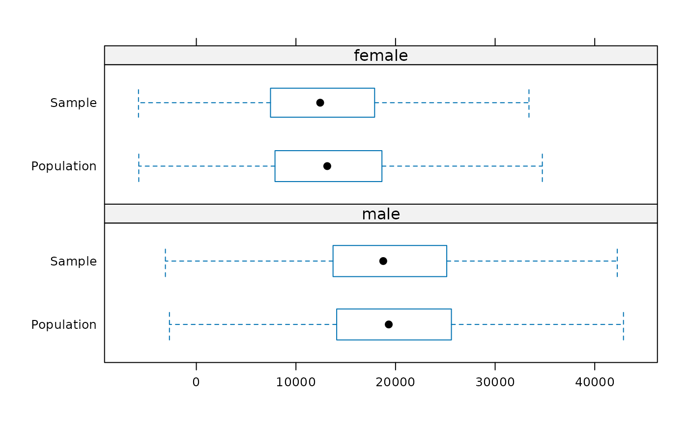

Produce box-and-whisker plots of continuous or semi-continuous variables, possibly broken down according to conditioning variables and taking into account sample weights.
spBwplot(
inp,
x,
cond = NULL,
horizontal = TRUE,
coef = 1.5,
zeros = TRUE,
minRatio = NULL,
do.out = FALSE,
...
)
panelSpBwplot(x, y, coef = 1.5, zeros = TRUE, ratio, outliers, subscripts, ...)
getBwplotStats(x, weights = NULL, cond = NULL, data, ..., name = "")
prepBwplotStats(x, w, ..., name = "")
# S3 method for data.frame
prepBwplotStats(x, w, ..., name = "")
# S3 method for default
prepBwplotStats(x, w, ..., name = "")an object of class simPopObj containing
survey sample and synthetic population data.
a character vector specifying the columns of data available in the sample and the population (specified in input object 'inp') to be plotted.
an optional character vector (of length 1, if used) specifying the conditioning variable.
a logical indicating whether the boxes should be horizontal or vertical.
a numeric value that determines the extension of the whiskers.
a logical indicating whether the variables specified by
x are semi-continuous, i.e., contain a considerable amount of zeros.
If TRUE, the box widths correspond to the proportion of non-zero data
points and the (weighted) box plot statistics are computed for these
non-zero data points only.
a numeric value in \((0,1]\); if zeros is
TRUE, the boxes may become unreadable for a large proportion of
zeros. In such a case, this can be used to specify a minimum ratio for the
box widths. Variable box widths for semi-continuous variables can be
suppressed by setting this value to 1.
a logical indicating whether data points that lie beyond the
extremes of the whiskers should be plotted. Note that this is FALSE
by default.
further arguments to be passed to
bwplot.
An object of class "trellis", as returned by
bwplot.
Missing values are ignored for producing box plots and weights are directly
extracted from the input object inp.
A. Alfons, M. Templ (2011) Simulation of close-to-reality population data for household surveys with application to EU-SILC. Statistical Methods & Applications, 20 (3), 383--407. doi: 10.1007/s10260-011-0163-2
## these take some time and are not run automatically
## copy & paste to the R command line
set.seed(1234) # for reproducibility
data(eusilcS) # load sample data
# \donttest{
## approx. 20 seconds computation time
inp <- specifyInput(data=eusilcS, hhid="db030", hhsize="hsize",
strata="db040", weight="db090")
simPop <- simStructure(data=inp, method="direct",
basicHHvars=c("age", "rb090", "hsize", "pl030", "pb220a"))
# multinomial model with random draws
eusilcM <- simContinuous(simPop, additional="netIncome",
regModel = ~rb090+hsize+pl030+pb220a+hsize,
upper=200000, equidist=FALSE, nr_cpus=1)
class(eusilcM)
#> [1] "simPopObj"
#> attr(,"package")
#> [1] "simPop"
# plot results
spBwplot(eusilcM, x="netIncome", cond=NULL)
spBwplot(eusilcM, x="netIncome", cond="rb090", layout=c(1,2))

# }